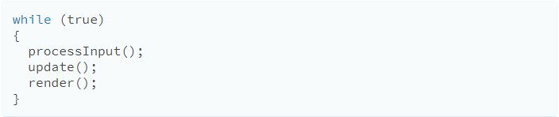
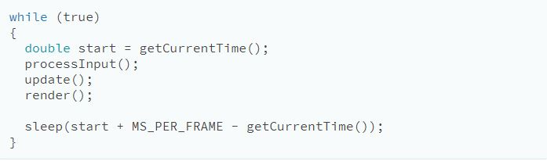

The Problem
Computers typically operate in sequential way by breaking large tasks into smaller ones. In this way, computers will perform one task at a time, one after another. Modern computers are so fast that the human eye cannot perceive each step, namely in image processing.
However, in the world of video games, the computer must render graphics in real time, and update each image every frame. Since computers perform one task at a time, running video games in this way runs into a problem. Graphics are constantly being rendered while the game runs. The intention of this design pattern is to display every pixel at the same time, instead of one pixel at a time.
The Pattern
A game loop runs continuously during gameplay. Each turn of the loop, it processes user input without blocking, updates the game state, and renders the game. It tracks the passage of time to control the rate of gameplay.
The intention behind design patterns is not to use as many as you can. However, the Game Loop pattern can be found in almost every video game imaginable. Even if the game is not always waiting for the player for input, sound and animations are almost always act true to this pattern.
The Simplest Game Loop
Here is one of the simplest examples of a game loop:
The problem with this example is it would be too fast for a faster computer and too slow for older, slower, hardware. To solve this problem and keep frames per second in mind, use this:
